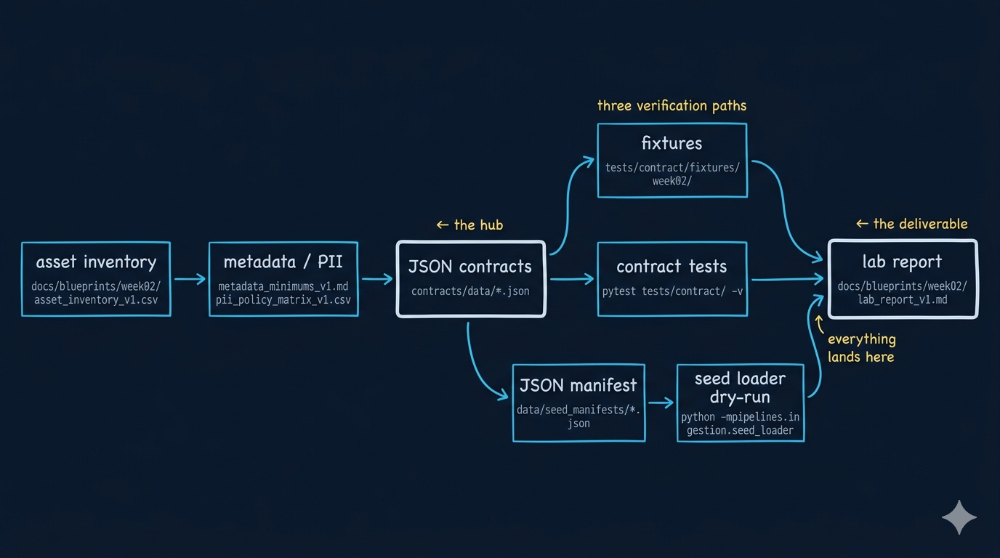

Week02｜实验｜四类数据契约与输入门禁最小闭环
把 Week02 真正跑成一条输入门禁链
这一页不是再讲一遍概念，而是把 Week02 的关键工件真正串成一个最小闭环：
asset inventory -> metadata / PII -> JSON contracts -> JSON manifest -> contract tests -> seed loader dry-run
如果这条链在 OmniSupport Copilot 仓库里能跑通，Week02 才算真正结束； 因为从这里开始，你已经把 Week03 ingest 的入口条件准备好了。
1. 实验目标
本实验只做一件事：
把 Week02 的输入控制面工件从“写出来”推进到“跑起来”。
完成后，你应该能解释：
- 为什么
docs/blueprints/week02/里的蓝图不是文档附件，而是输入系统的前置条件 - 为什么
contracts/data/*.json决定的是“哪些输入能进系统” - 为什么
data/seed_manifests/*.json决定的是“这一次 ingest 到底接哪一批 source” - 为什么
pytest tests/contract/ -v和seed_loaderdry-run 是 Week03 起跑前必须先过的两道门
这次实验真正练的是 gate thinking：
- 哪类问题应该在 contract tests 暴露
- 哪类问题应该在 manifest / loader 阶段暴露
- 哪类问题应该
warn，哪类应该quarantine，哪类必须reject
2. 参考实验时间
如果你只是通读实验说明并理解闭环结构，大约需要 25–35 分钟；如果你跟着页面把 contract、manifest、tests 和 seed_loader dry-run 真正跑一遍，并完成 lab_report_v1.md，建议预留 75–105 分钟。
3. 前置条件
开始前，请确认你至少满足下面 4 个条件：
本页所有命令，都默认在 OmniSupport Copilot 仓库根目录 执行。 本实验不要求你优先配置本机 Python，不要求你新造 repo 外脚本，默认统一走 Docker devbox。
4. 这次实验会直接用到什么
4.1 Week02 蓝图工件
docs/blueprints/week02/asset_inventory_v1.csvdocs/blueprints/week02/metadata_minimums_v1.mddocs/blueprints/week02/pii_policy_matrix_v1.csv
4.2 Week02 运行时工件
contracts/data/ticket_contract.jsoncontracts/data/doc_asset_contract.jsoncontracts/data/audio_asset_contract.jsoncontracts/data/video_asset_contract.jsondata/seed_manifests/source_manifest_schema.jsondata/seed_manifests/manifest_tickets_synthetic_v1.jsondata/seed_manifests/manifest_edge_gateway_pdf_v1.jsondata/seed_manifests/manifest_workspace_helpcenter_v1.jsontests/contract/fixtures/week02/tests/contract/test_json_schemas.py
4.3 你这次要新增或修正的工件
tests/contract/fixtures/week02/sample_records.jsondata/seed_manifests/manifest_week02_practice_v1.jsondocs/blueprints/week02/lab_report_v1.md
5. 这次实验最终要交出什么
至少产出下面 7 项：
- 一份完成版
docs/blueprints/week02/asset_inventory_v1.csv - 一份完成版
docs/blueprints/week02/metadata_minimums_v1.md - 一份完成版
docs/blueprints/week02/pii_policy_matrix_v1.csv - 一份练习版
data/seed_manifests/manifest_week02_practice_v1.json - 一次 contract tests 运行记录
- 一次
seed_loaderdry-run 运行记录 - 一份
docs/blueprints/week02/lab_report_v1.md
5.5 合格实验结果长什么样
| 你最后应该看到什么 | 这说明什么 |
|---|---|
| 四类输入至少有最小样例 | 输入对象已经被建模，而不是只停在讲义里 |
| contract tests 能定位错误层级 | gate 已经开始发挥作用 |
| manifest 能绑定 contract 并进入 dry-run | 批次意图已经进入运行闭环 |
| 至少一次失败注入能被正确暴露 | 你不是只会“跑绿”，而是开始会排障 |
lab_report_v1.md 说得清 root cause |
你已经在做工程判断，而不是记录流水账 |
6. 先看 Week02 最小闭环长什么样

这张图表达的不是“流程很多”，而是：
- 课时2提供输入地图
- 课时3提供 metadata / PII 边界
- 课时4把边界写成可执行 contract
- 课时5把 contract 和 manifest 收成一次 ingest 决策
7. 先把课时 2–5 的工件关系摆正
| 来自哪一课 | 这节课留下什么 | 这次实验会怎么消费它 |
|---|---|---|
| 课时2 | asset_inventory_v1.csv |
决定哪些 source 值得进入 ingest |
| 课时3 | metadata_minimums_v1.md + pii_policy_matrix_v1.csv |
决定 contract 里必须反映哪些字段与边界 |
| 课时4 | 四类 JSON contract | 决定哪些输入符合最低准入标准 |
| 课时5 | JSON manifest + schema | 决定一次 ingest 如何声明、如何校验 |
Week02 实验不是写几份文件，而是让你看到： 这些文件一旦进入 repo，就会直接影响 contract tests、manifest 校验和 Week03 ingest。
8. 操作步骤
8.1 第 1 步：检查 Week02 基础工件是否齐全
先确认这些关键路径都存在：
docs/blueprints/week02/asset_inventory_v1.csv
docs/blueprints/week02/metadata_minimums_v1.md
docs/blueprints/week02/pii_policy_matrix_v1.csv
contracts/data/ticket_contract.json
contracts/data/doc_asset_contract.json
contracts/data/audio_asset_contract.json
contracts/data/video_asset_contract.json
data/seed_manifests/source_manifest_schema.json如果你想快速核对，可以先运行：
ls docs/blueprints/week02
ls contracts/data
ls data/seed_manifests8.2 第 2 步：补齐或修正四类 contract 的 metadata / PII 要求
这一步不要新造 YAML，也不要再写一套课程专用 schema。 直接检查当前 JSON contract 是否真正反映了 Week02 的要求：
contracts/data/ticket_contract.jsoncontracts/data/doc_asset_contract.jsoncontracts/data/audio_asset_contract.jsoncontracts/data/video_asset_contract.json
你至少要问自己下面 4 个问题：
| 检查项 | 你在确认什么 |
|---|---|
| metadata | contract 里是否体现了最小 metadata 要求 |
| PII | contract 里是否反映了输入边界和敏感字段约束 |
| policy | 哪些字段缺失、越界、漂移时应被拦截 |
| compatibility | contract 的演进是否还能被下游接受 |
8.3 第 3 步：准备 fixture
在 tests/contract/fixtures/week02/ 下准备最小样例。
这次实验最低要求是： 至少有 4 条记录，分别覆盖 ticket / document / audio / video。
推荐你直接用一个文件收起来：
mkdir -p tests/contract/fixtures/week02
touch tests/contract/fixtures/week02/sample_records.json这些样例不是为了“凑数”，而是为了在实验报告里回答：
- 哪些字段是所有模态都必须带的
- 哪些字段是某一模态特有的
- 哪些字段一旦缺失，会让 Week03 ingest 直接变得危险
8.4 第 4 步：跑 contract tests
统一用 Docker devbox：
docker compose --profile tools --env-file infra/env/.env.local -f infra/docker-compose.yml run --rm devbox \
pytest tests/contract/ -v你跑通以后，最少应该看见哪 4 类结果
| 结果类型 | 你应该看到什么 |
|---|---|
| schema 加载结果 | tests/contract/test_json_schemas.py 被执行 |
| contract 状态 | 四类 contract 能被正常读取 |
| fixture 对齐状态 | 至少一组 Week02 样例进入检查链 |
| 失败定位线索 | 如果你故意改坏 enum / required / type，测试能明确报出在哪一层坏了 |
8.5 第 5 步：创建或修正一个 Week02 练习 manifest
这次实验要补的文件名固定为：
data/seed_manifests/manifest_week02_practice_v1.json创建命令：
touch data/seed_manifests/manifest_week02_practice_v1.json
touch docs/blueprints/week02/lab_report_v1.md这份文件必须遵守：
data/seed_manifests/source_manifest_schema.json
它至少应该表达清楚：
- 这次 ingest 的 source 是什么
- 它引用哪份 contract
- 它属于 full / incremental / replay 的哪一种
- 哪些 source 这次只是练习，不一定真正放行
8.6 第 6 步：跑 seed loader dry-run
统一用 Docker devbox：
docker compose --profile tools --env-file infra/env/.env.local -f infra/docker-compose.yml run --rm devbox \
python -m pipelines.ingestion.seed_loader --manifest-dir data/seed_manifests这一步你至少要在实验记录里说明 3 件事：
- 哪些 manifest 成功被读取
- 哪些字段最容易出错
- 如果 metadata 缺失、enum 漂移、access 边界不清，会在什么阶段暴露
9. 失败时的排障顺序
不要从最远的地方猜。固定按下面的顺序查：
| 顺序 | 先查什么 | 为什么先查这里 |
|---|---|---|
| 1 | contract | 最底层的 gate 规则先要成立 |
| 2 | fixture | 样例不对，后面所有输出都会误导你 |
| 3 | manifest | 批次声明错了，loader 一定会读偏 |
| 4 | loader / test output | 最后再读执行输出，不要先猜脚本 bug |
如果你先跳到第 4 步看日志，很容易把“contract 写错了”误判成“seed_loader 有问题”。
10. 问题注入：故意制造一次失败
这一段是本实验真正关键的部分。 如果你只把所有东西跑成绿色，这次实验其实是不完整的。
请至少故意制造 1 次失败。推荐从下面三种里选一种：
方案 A：在 fixture 中删掉关键 metadata
例如删掉 document 样例里的：
doc_versionsection_pathpage_no
方案 B：把 manifest 里的 contract_ref 指错
例如让 document source 指向 ticket_contract.json，观察 gate 会在哪个阶段暴露不匹配。
方案 C：制造一个枚举漂移
例如在 ticket 样例里引入 contract 尚未收录的 status 值，观察 tests 和 dry-run 哪一步先报警。
11. 一个最小 lab_report 模板
你不需要把实验报告写成长文，但至少要有下面这些段落：
# Week02 Lab Report
## 1. 本次使用的工件
- asset inventory:
- metadata minimums:
- pii policy:
- contracts:
- manifest:
## 2. 本次执行的验证命令
- pytest:
- seed loader dry-run:
## 3. 成功结果摘要
- contract tests:
- manifest check:
- loader dry-run:
## 4. 失败注入与观察
- 注入方式:
- 暴露阶段:
- 为什么会暴露:
## 5. 我对 Week03 起跑线的判断
- 现在已经具备的条件:
- 仍然缺的运行时能力:建议至少把下面 4 句话写进去：
- 这次 contract tests 最先替我拦住了什么问题。
- 这次 dry-run 最先暴露了哪类批次语义或 manifest 问题。
- 如果把这批问题放到 Week03 再修，会先伤到哪一层。
- 我现在认为这套输入准入包是否已经够资格进入 Week03。
12. 更强的完成度长什么样
| 完成度 | 你至少还可以再多做什么 |
|---|---|
| 合格 | 跑通 1 轮 tests + 1 轮 dry-run，并写清失败注入 |
| 更强 | 为 4 类输入都准备样例，并清楚解释各自关键 metadata |
| 很强 | 给 manifest 做出 2 种不同 load mode，并说明为什么 |
| 最佳 | 不只记录结果，还能指出哪类问题应该在 contract 层暴露，哪类应该在 loader 层暴露 |
13. 常见错误
| 错误 | 为什么会出问题 |
|---|---|
| 只改蓝图，不改 contract | 系统不会自动消费你的 Markdown |
| 只跑 tests，不跑 dry-run | 你只验证了结构，没有验证批次入口 |
manifest 没写 contract_ref |
运行时无法确定准入标准 |
| 报错后直接改脚本 | 大多数错误先在 contract / fixture / manifest 层 |
13.5 最常见的 5 个实验假阳性
| 假阳性 | 为什么它会误导你 |
|---|---|
| tests 绿了就以为 Week02 完成了 | 你只验证了部分结构，没有验证批次入口 |
| dry-run 跑完就以为一定能进入 Week03 | 还要看 accept / quarantine / reject 的判断是否合理 |
| 只要 manifest 能被读取，就说明语义正确 | loader 能读不代表 load mode、window、contract binding 都合理 |
| 只要样例能过，就说明真实 source 也安全 | fixture 是最小样例，不是生产全貌 |
| 报错消失就说明根因解决了 | 你可能只是绕过了 gate，而不是修掉了边界问题 |
14. 验收方式
15. 与作业页的衔接
实验页解决的是：
- 你能不能把 Week02 的输入控制面跑起来
作业页解决的是：
- 你能不能把这套工件整理成一个正式提交包
所以你完成这一页后，下一步不是重复实验，而是把：
- 蓝图
- contracts
- manifest
- 验证结果
- 实验结论
收口成一份可评审、可进入 Week03 的正式作业交付。